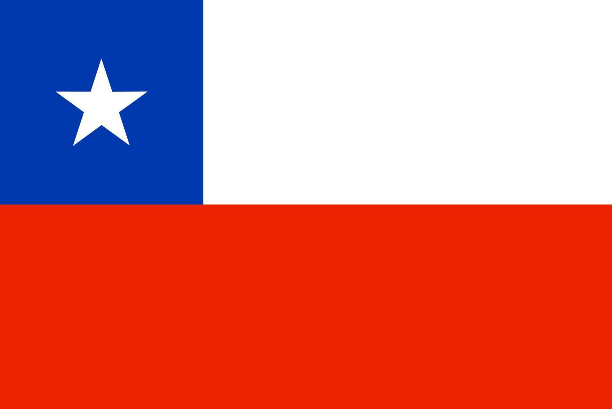
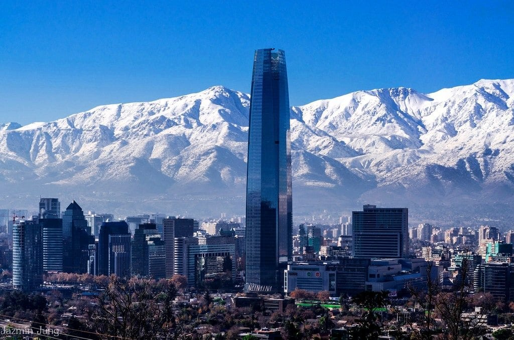
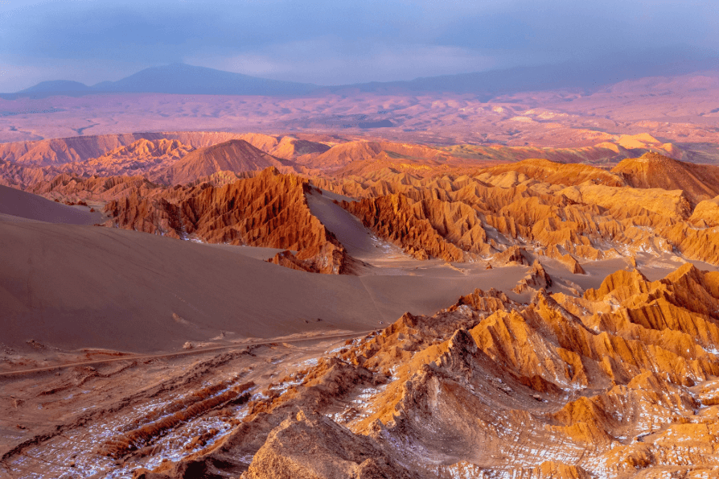

ᑕᕼIᒪᕮ



Resumo básico
O Chile é um país sul-americano longo e estreito, situado entre a colossal Cordilheira dos Andes e o vasto Oceano Pacífico. Com capital em Santiago, o país se destaca por sua geografia extrema e contrastante, que se estende por milhares de quilômetros. Ao norte, encontra-se o Deserto do Atacama, considerado o deserto mais árido do mundo, com paisagens totalmente deslunbrantes e céus limpos que favorecem a observação astronômica, observatórios importantes ficam aqui. Já ao sul, a região da Patagônia revela um cenário completamente distinto, marcado por geleiras monumentais,montanhas e vastas áreas selvagens. Essa diversidade natural não apenas define a paisagem chilena, mas também influencia diretamente sua cultura, economia e modo de vida, tornando o país um dos territórios mais singulares e fascinantes do continente.
Rapa Nui
A Ilha de Páscoa, conhecida originalmente como Rapa Nui, localizada no hemisfério sul a cerca de 3.700 km da costa do Chile, é um dos lugares mais intrigantes do mundo. Com seus famosos Moais (estátuas de pedra), atrai atenção e desperta curiosidade sobre a história e cultura da ilha. Mais recentemente, também ganhou destaque na cultura da internet com o meme do “fino senhores”.
Cultura
Assim como outros países da America do Sul, o Chile possui uma identidade cultural marcada pela miscigenação entre povos indígenas (especialmente os Mapuches) e os colonizadores espanhóis, a partir do Século XVI. No norte do território, também há influências dos Incas. Essa combinação resultou em uma cultura diversa e rica, expressa em festividades típicas, tradições e manifestações artísticas. Na música e na dança, ritmos como a cueca representam a identidade nacional. Já na culinária, pratos típicos combinam ingredientes nativos com influências europeias. Assim, o Chile apresenta um patrimônio cultural dinâmico, onde elementos indígenas, incas e europeus se entrelaçam.



Geografia
A geografia do Chile extremamente alongada no sentido norte-sul e estreita de leste a oeste, resulta em uma notável diversidade climática e ambiental. Em um mesmo país, extremos coexistem, como o árido Deserto do Atacama, florestas densas e férteis, além de montanhas imponentes e vastas geleiras no sul. Essa relação intensa com a natureza é complementada por sua extensa costa voltada para o Oceano Pacífico. No cenário econômico global, o Chile ocupa posição de destaque como o maior produtor de cobre do mundo, sendo responsável por cerca de 25% da produção mundial.